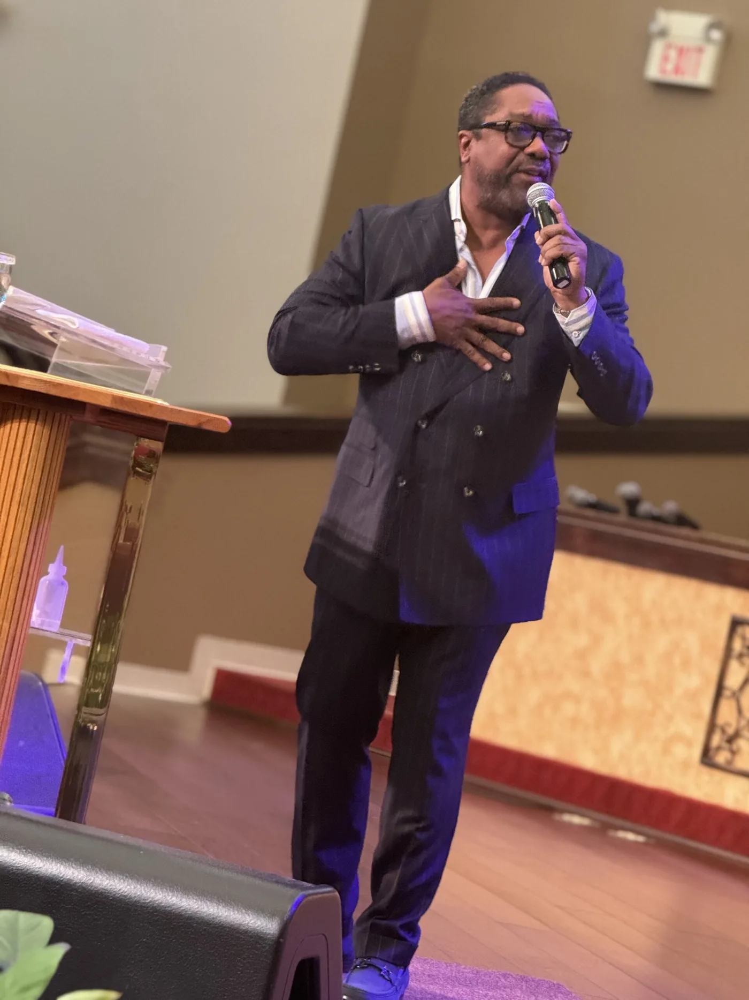
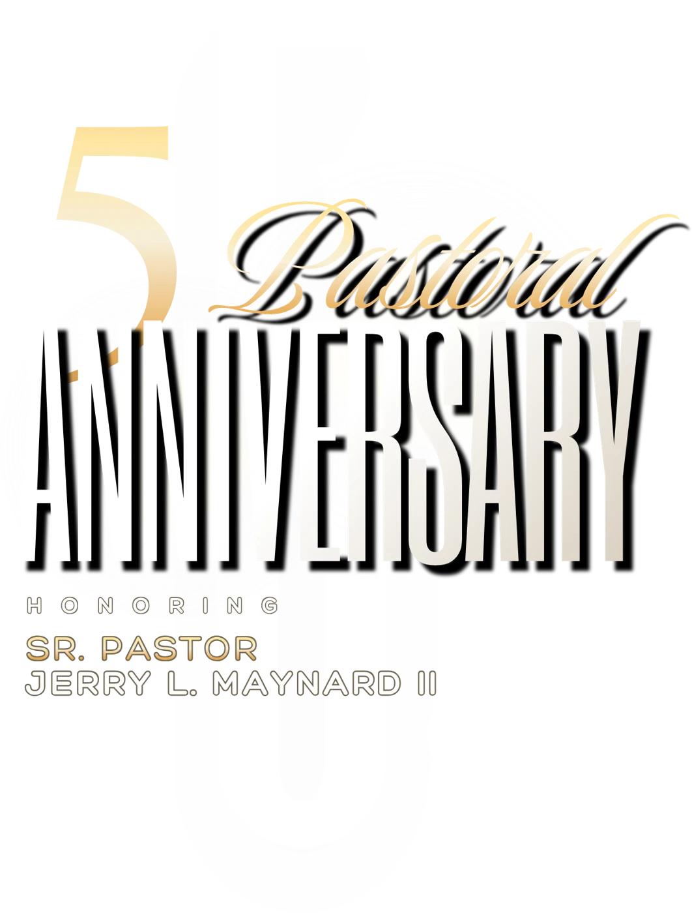
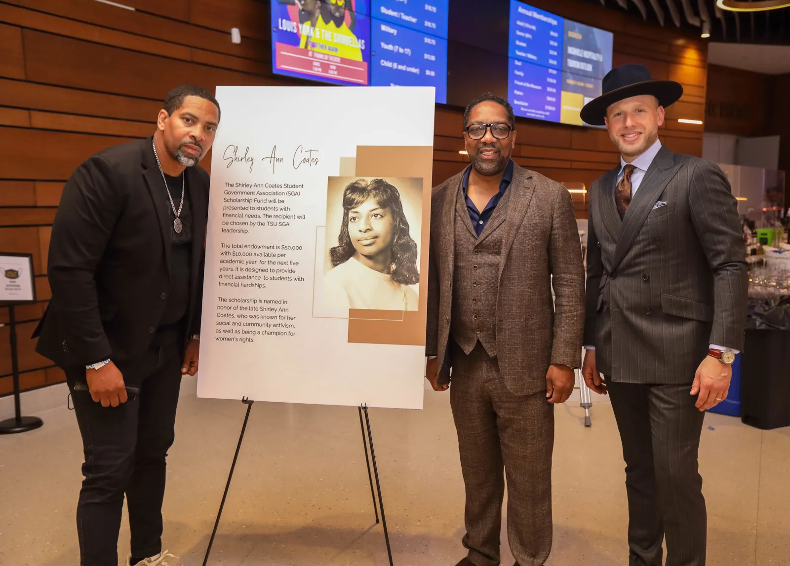
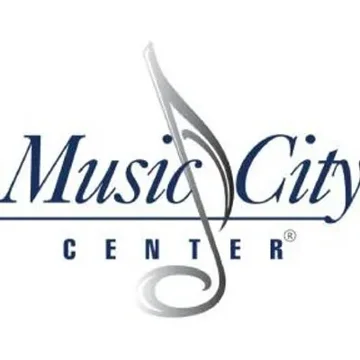
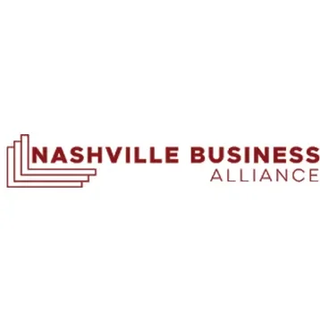
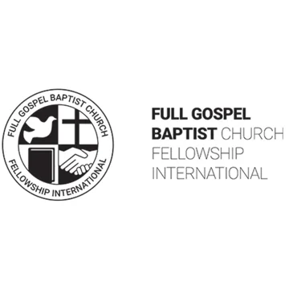
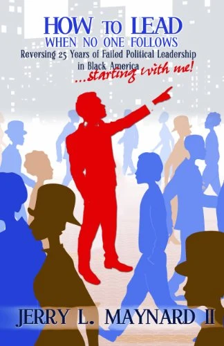

01 / PastorCathedral of Praise
Pastor
Pastor
Senior Pastor of Cathedral of Praise, a multi-campus Nashville church serving the community since 1966.
Explore3,000+active members

Senior Pastor of Cathedral of Praise, a multi-campus Nashville church serving the community since 1966.
ExploreFounder and CEO of The Maynard Group, built into the largest Black-owned government relations firm in Tennessee.
ExploreTwo-term Metro Council Member At-Large and the first African American Deputy Chair of the Tennessee Democratic Party.
Explore
Five years in the pulpit at Cathedral of Praise. Two services, one family, and a church that came out to honor its pastor. Relive the celebration.
In the last 20 years, the work Jerry Maynard has gotten done for Nashville and the Black community is second to none. These are the numbers behind the reputation.
in contracts opened to minority- and women-owned small businesses, including an $80M+ inclusion MOU with Bell Construction.
new voters registered through his statewide drive.
raised and secured for the National Museum of African American Music.
secured for Nashville General Hospital's electronic records and imaging equipment.
“Know when to fight, how to unite, and never lose focus on getting things done.”
in scholarships given by Cathedral of Praise over the past 20 years.
families helped move from shelters into homes.

From the pulpit, the studio and the television set. Turn the sound on.
Live every Sunday at 10:00 AM Central, right here and on YouTube.
Government relations, institutional development and advocacy for global brands, healthcare systems, sports franchises and the city itself.



I've worked with Jerry Maynard up close. Jerry fights for what he believes and then works with you to get something done to help people. He's a fighter, he's an uniter, and he's a leader.
His approach is fearless and effective. You don't get things done by going along to get along. Nashville General and the National Museum of African American Music are great examples of where Jerry's fearless effectiveness got big wins for our community.
I named him to be the first and only Deputy Chairman of the TN Democratic Party. Jerry has always been and remains loyal, trustworthy, diligent, and dependable.

A rebuke of a failed system of political leadership and a challenge to the Black community to demand more of its leaders, and more importantly, of itself. Jerry has fought for the community as a lawyer, a politician and a pastor, and has seen the good and the bad of it all. This book is the manifesto that came out of it.
Keynotes, boardrooms, pulpits and panels. Jerry speaks on leadership, faith and building wealth in community.